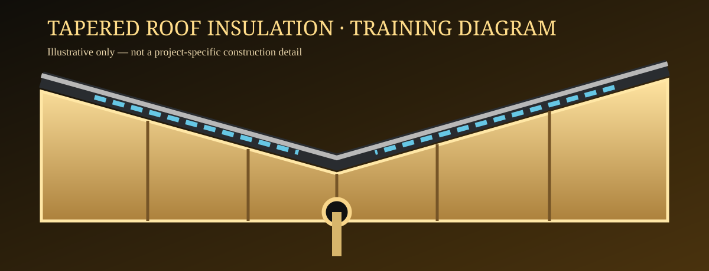

Learn how a properly designed tapered insulation scheme directs rainwater to outlets beneath a compatible built-up felt roofing system. Follow a complete illustrated learning journey from survey to handover.
Educational course preview available now. Paid checkout for this course is not enabled until protected delivery, media and purchase confirmation have been tested.
Professional safety and design note: This course teaches how to interpret and check a project-specific approved scheme. Do not select insulation thickness, fixings, fire classification, vapour control, drainage capacity or roof falls solely from these examples. Obtain competent design and the manufacturer's project-specific board schedule. Working at height and hot works require competent personnel and appropriate site controls.
Original animated tutorial 01
How tapered boards form a drainage fall
Select each stage to see a simplified cross-section. This is an original browser animation, not recorded site footage or a manufacturer installation instruction.
Illustrative layered roof assembly; select a stage above to reveal tapered boards, the roof covering and drainage arrows. Not a manufacturer's board schedule or an installation specification.
Stage 4: Verify continuity to outlets, check local levels and record deviations for designer approval.
Original technical illustration 02
Read the plan before laying a single board
3D teaching plan: cream = tapered insulation, grey = high/level zones, blue arrows = direction of rainwater flow to designed outlets. Refer to project drawings for board codes and details.
Conceptual teaching diagram only: real layouts require accurate dimensions, surveyed levels, outlet capacities, manufacturer board codes, crickets, sumps, interfaces and a checked drainage design.
Structured course curriculum
Eight professional learning modules
01 · Survey & design
Understand the existing roof
Survey dimensions, deck levels, deflection, standing water and outlet locations.
Identify thresholds, upstands, penetrations and roof loading constraints.
Check thermal design, condensation risk, fire requirements and compatible waterproofing.
Understand why a level deck cannot simply be assumed.
Checkpoint: What information is missing from a roof plan without surveyed levels?
02 · Falls calculations
Know what the numbers mean
Fall ratio 1:N means 1 mm drop for each N mm of horizontal run.
Illustrative 1:80 design slope gives 50 mm over 4 m.
Distinguish specified design falls from achieved finished falls.
Check design requirements against applicable UK guidance and the actual roof geometry.
Checkpoint: Calculate the change in level before selecting any board schedule.
03 · Manufacturer layout
Read board codes and zones
Locate datum, high points, low points, ridges, valleys, crickets and sumps.
Match each board code to its actual thickness range and directional arrow.
Use delivery labels and approved drawings to establish laying sequence.
Never substitute an apparently similar board without approval.
04 · Substrate & VCL
Prepare the system
Check deck integrity, dryness, cleanliness and substrate compatibility.
Confirm the specified vapour control layer, laps and penetrations.
Resolve wet insulation or defects before covering.
Protect exposed works against weather and moisture ingress.
05 · Board installation
Follow the approved sequence
Set out from the datum specified on the manufacturer's drawing.
Dry-check board codes and orientation before permanent fixing.
Use only approved adhesive or mechanical fixing patterns and wind-uplift design.
Control joints, transitions, cut pieces and temporary protection.
06 · Drainage & detailing
Finish the difficult areas
Inspect valleys, sumps, outlets and secondary drainage provision.
Check upstand heights, door thresholds and perimeter interfaces.
Verify compatible cover boards and waterproofing build-up.
Flag reverse falls and local ponding for design review.
07 · Built-up felt interfaces
Check membrane compatibility
Identify which insulation facings and cover boards suit the specified felt system.
Do not apply direct torch flame to combustible insulation or unapproved substrates.
Follow the manufacturer's flame-free or approved installation details.
Use competent hot-work controls, permits and fire-watch arrangements.
08 · Quality & handover
Inspect before waterproofing
Record board types, orientation, thickness transitions and fixings.
Compare installed levels and drainage paths with the approved scheme.
Photograph concealed details before they are covered.
Obtain designer approval for deviations; retain inspection records.
Interactive practice
Roof falls calculator
Use this to understand level differences, not to design or approve a roof.
Formula: change in level (mm) = horizontal run (m) × 1000 ÷ ratio. Actual board thicknesses depend on the approved system schedule, existing levels and minimum thickness requirements.
Planned narrated videos: 01 Roof survey and levels; 02 Understanding tapered board schedules; 03 Set-out and board sequencing; 04 Valleys, sumps and outlets; 05 Inspection and common faults. Professional site footage and AI-rendered teaching animations are not yet published. The original animated cross-section above is available to try now.
For a full course release, each video should clearly distinguish simulated illustrations from real site work, include captions, and have technical review against the selected manufacturer's installation manual.
Check current BS 6229 guidance, applicable Building Regulations, project-specific drainage calculations and manufacturer technical literature with a competent designer. Numerical examples in this course are illustrative and not a universal specification.
Technical system illustration
Understand the complete roof build-up

Original educational illustration. Exact layers, slopes and fire-safe waterproofing method require a manufacturer-approved project design.
Design information
Confirm measured deck levels, wind uplift, condensation risk, thermal requirements and drainage capacity before installation.
Board identification
Check board codes, starting datum, directional arrows, minimum thickness and transitions against the approved schedule.
Inspection evidence
Record material types, fixings, levels, outlets and any approved deviations before covering the work.